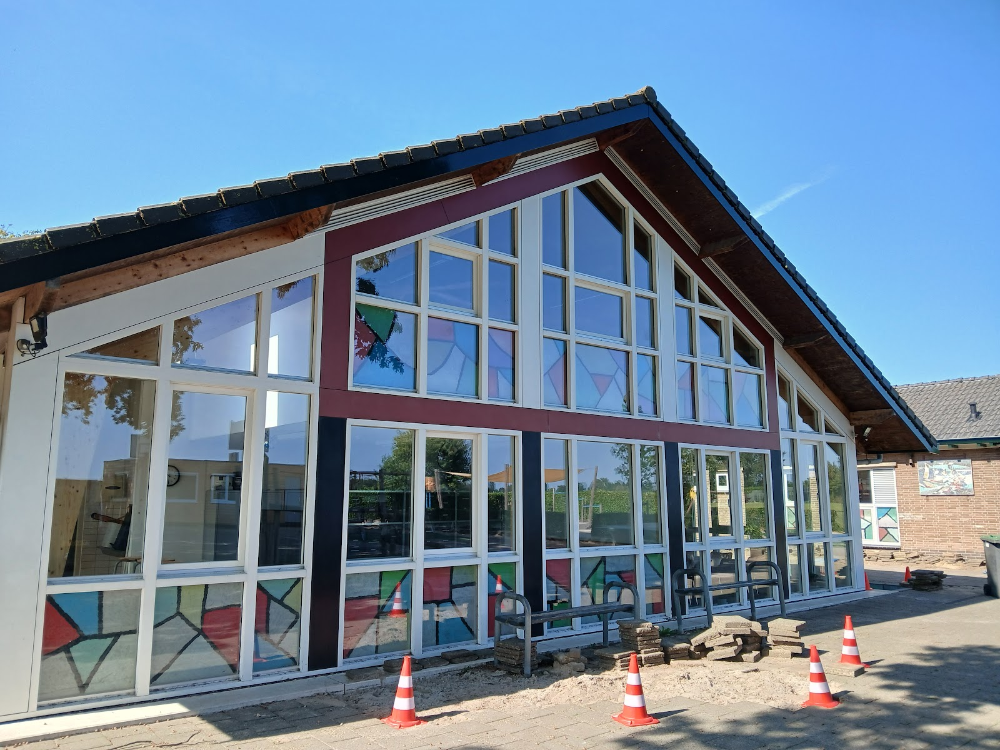
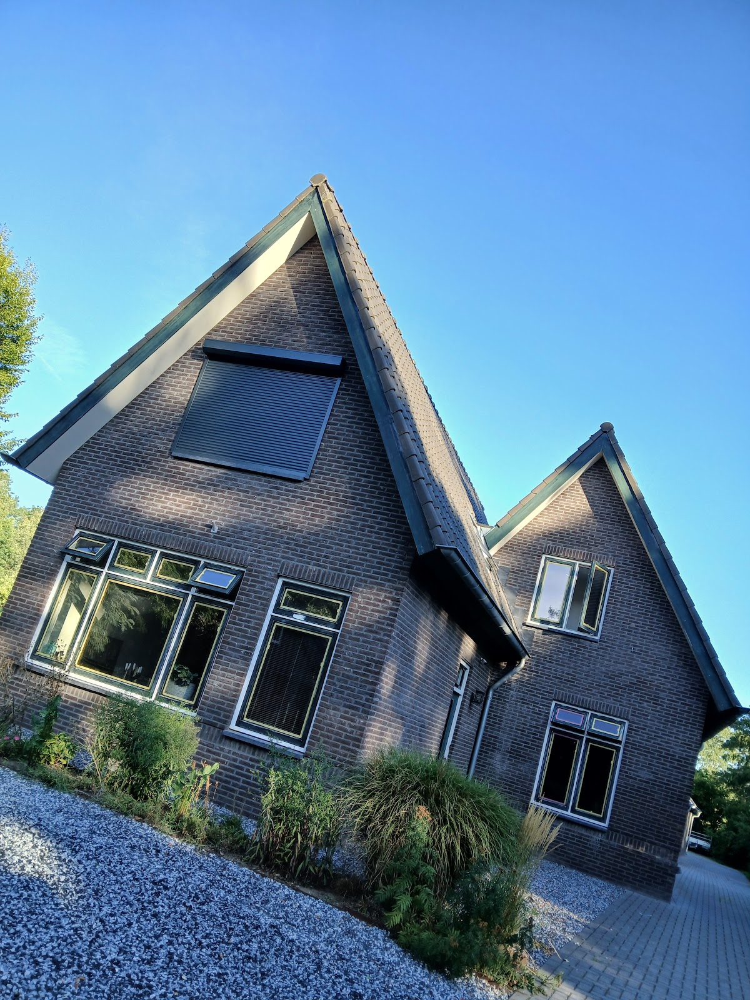
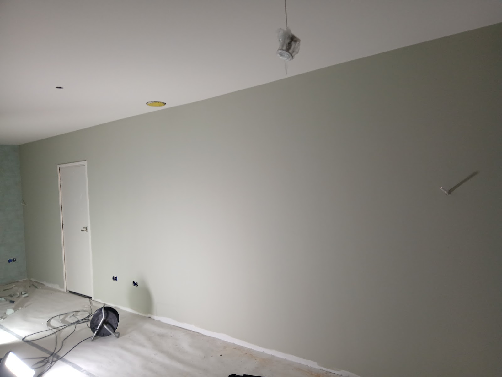
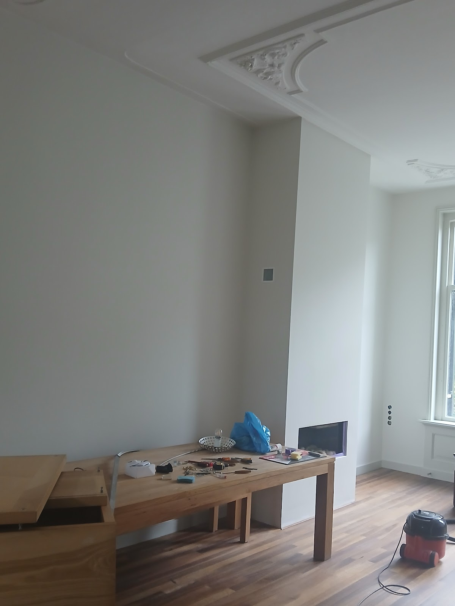
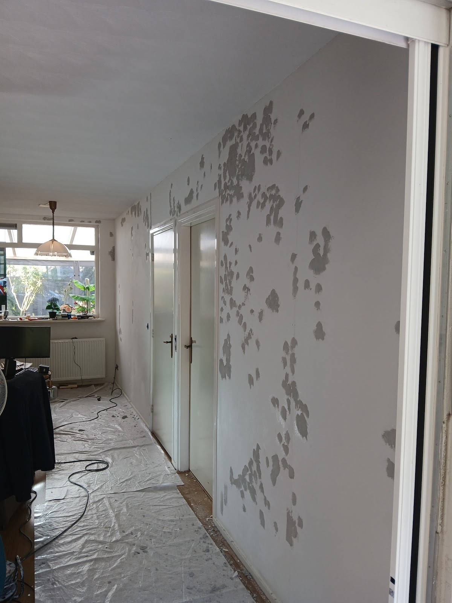
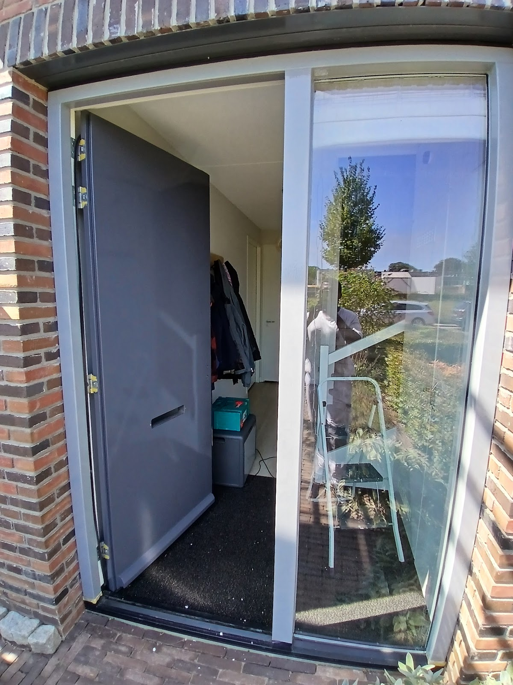
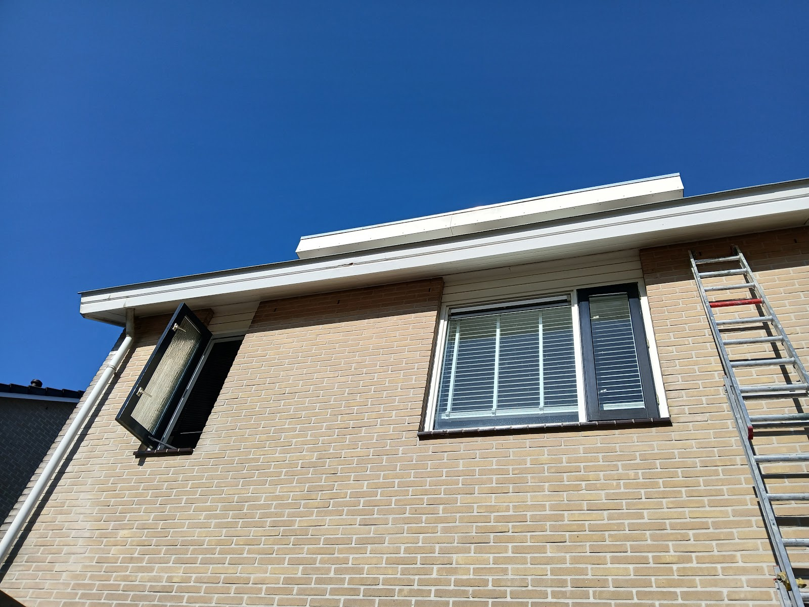

Schilder in Zutphen
Strak in de verf, schoon achtergelaten.
Schilderwerk binnen en buiten, stucwerk, behang en laminaat. Netjes voorbereid, vakkundig afgewerkt en uw huis gaat opgeruimd terug. Elke dag bereikbaar van 08:00 tot 20:00.
5,0 op Google

Van kale muur tot strakke afwerking.
Van een kleine retouche tot een complete woning: vakkundig gedaan, met oog voor detail en goede materialen.
Bespreek uw klus: 06 87699952-
Schilderwerk binnen
Muren, plafonds, deuren en kozijnen. Eerst gaten dichten en plamuren, dan pas verf. Zo krijgt u een egale muur zonder vlekken of randen.
-
Schilderwerk buiten
Kozijnen, deuren, boeiboorden en gevels. Goed voorbereid en gelakt, zodat het hout beschermd is tegen weer en wind.
-
Stucwerk
Glad en strak stucwerk: de basis voor elke mooie muur, of u er nu verf of behang op wilt.
-
Behangen
Renovlies, patroonbehang of fotobehang, naadloos aangebracht.
-
Glas zetten
Nieuw glas in uw kozijnen, netjes geplaatst en afgewerkt.
-
Laminaat leggen
Met de juiste ondervloer en afgewerkt met plinten. De vloer als laatste stap van een opgeknapte kamer.
Werk van Salum, binnen en buiten.
Geen plaatjes uit een fotobank: dit zijn foto's van echte klussen.






"Zeer tevreden over Salum Schilderwerk! Hij heeft het schilderwerk in ons nieuwe huis netjes en vakkundig uitgevoerd. Afspraken werden goed nagekomen, hij werkte schoon en het resultaat ziet er strak uit. Prettig in de communicatie en hij spreekt ook Engels, wat handig is voor internationale klanten. Een aanrader!"
Waar u op kunt rekenen
- Afspraak is afspraak
- Wat is afgesproken, wordt nagekomen. Duidelijke communicatie vooraf en tijdens de klus.
- Schoon gewerkt
- Vloeren en meubels afgedekt, en na afloop netjes opgeruimd.
- Nederlands of Engels
- Also happy to help in English.
- Elke dag bereikbaar
- Maandag tot en met zondag, van 08:00 tot 20:00.
Zin in een frisse kleur?
Bel of mail voor een vrijblijvende offerte. Vertel wat u wilt laten doen, dan kijken we samen wat het beste past.
Bel 06 87699952- info@salumschilderwerk.nl
- Adres
- Beekstraat 20
7201 LS Zutphen - Open
- Elke dag 08:00 tot 20:00
- Werkgebied
- Vanuit Zutphen, door heel Nederland